�V.広告
�C1981〜1985年の広告
・1981年
さらに広告点数が減る。メインの掲載媒体が月刊誌ではなく季刊誌となったことも影響したかもしれないが、旧会社の経営の悪化もあるのだろう。2点カラー広告があるが、見つけた範囲では最後のもの。ラウドスピーカーにELS-Fシリーズが登場。トーンアームで従来モデルの改良型UA-7/cfN・9Nが登場。同社最後のアームであり、広告に登場するのもこれが最後だった。
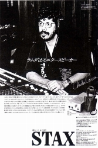 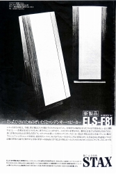 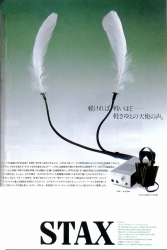 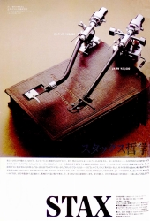
・1982年
この年が、長年続いた雑司ヶ谷時代の最後である。ヘッドフォン関係ではSR-40とΛ(ラムダ）の混血モデルSR-80が登場、パワーアンアではDA-100MのジュニアモデルDA-50Mが登場する。SR-80の改良型SR-80proは同社最後のエレクトレット型となり、DA-50Mは1980年代後半に超弩級アンプが登場するまで、同社パワーアンプの命脈をつなげた。
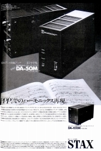 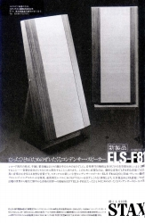 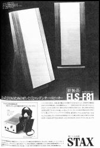 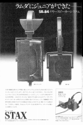
・1983年
この年の広告はスタックスとしては起死回生の商品、小型コンデンサースピーカーESTA4U関連ばかりである。個人的に1年足らずででた改良モデルを使ったことがあるが、魅力的だがいろいろ問題がある製品だった。磁気回路がないため、このころ話題になり始めたAV（オーディオ・ビデオ）用（＊1）スピーカーとして押す広告めいた記事も見かけたが、とてもそうした用途にむくとは思えなかった。唯一のヘッドホンの広告は、いろいろな意味で貴重な資料。まず管理人が見つけた範囲で一般向けに580Vバイアス製品の発売（＊2）を示す最初の広告であること。またSR-5Nが2ミクロン厚膜であることを示す資料であることである。
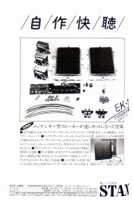 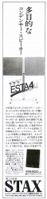 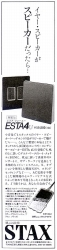 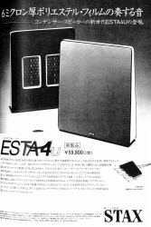 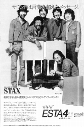 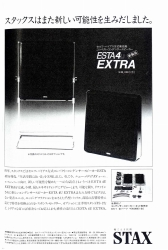
＊1 当時のブラウン管テレビにスピーカーを近付けると、磁気回路の影響で画面にひどい色むらがでた。そこでキャンセリングマグネットを使った防磁スピーカーが増え、その傾向は2000年過ぎまで続いた。磁気回路のないコンデンサー型では色むらがおきないが、テレビと組み合わせるには大きすぎ、また力強い音がでにくいこの製品はとても向くとは思えない。
＊2 SR-Λ(ラムダ）PROの完成は1982年といわれており、そのころ高城重躬(たかじょう・しげみ)氏がエッセイで取り上げたり、江川三郎氏が記事を書いたりして、知る人ぞしる存在ではあったが、カタログに掲載されないモデルであった。（カタログ掲載は1986年2月版から。）
・1984年
エレクトレット型の新機種SR-30が登場する。SR-Λ(ラムダ）PROの初の単独広告では、580Vバイアスを「ハイ・バイアス」と呼んだり、膜厚がノーマルモデルと同じ2ミクロンだったりと、過渡期である様子が伺える。またコンデンサー型スピーカーキッドの広告の片隅で1980年代後半、スタックスが力を入れた線材の発売がアナウンスされている。
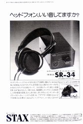 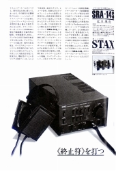 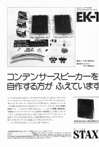 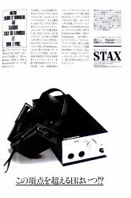
・1985年
1960年のSR-1発売から25年目にあたるこの年、580Vバイアスのプロフェッショナルシリーズを全面に押し立てた攻勢にでる。しばらく広告掲載がなかった月刊誌でも広告展開したようだ。SR-α（アルファ）PROとSR-X/MK-3PROが登場し、SR-Λ(ラムダ）PROも1.5ミクロン厚膜に改められた。しかし、その一方で広告の片隅に人事募集が何度かのった。
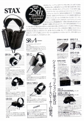 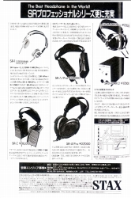 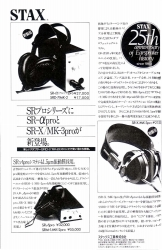 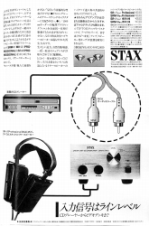 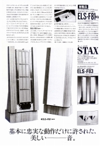